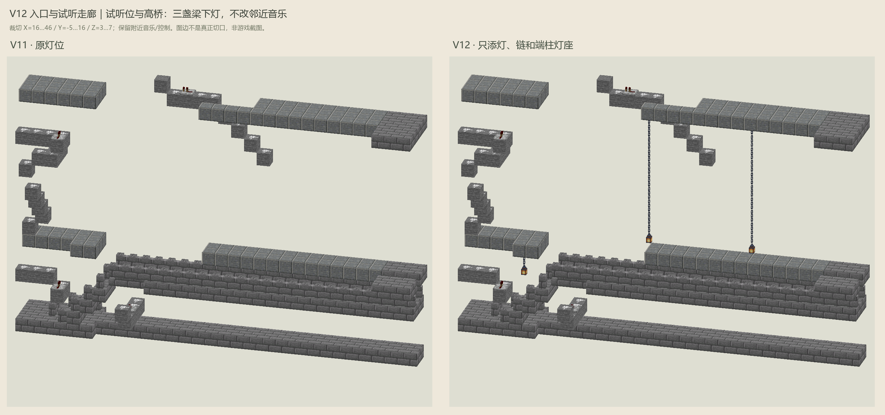
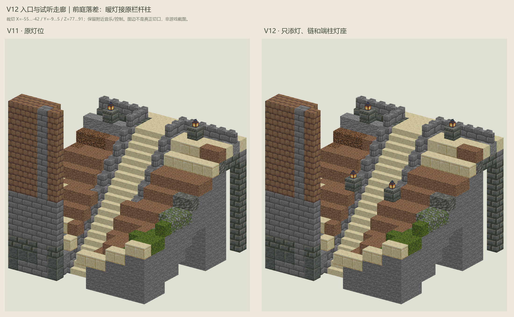
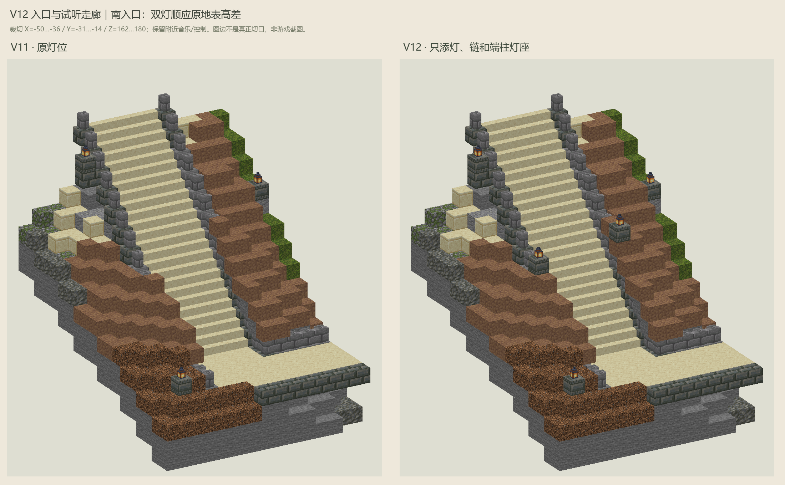
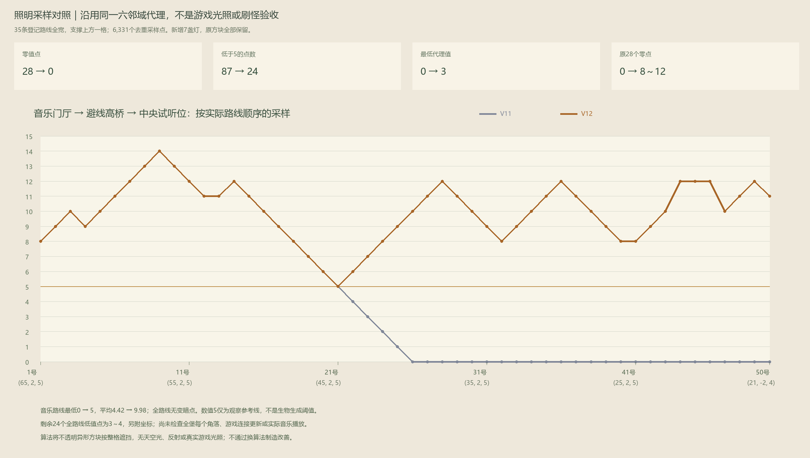

余响堡 / V12 / 入口与音乐走廊定点补光
不动台阶与音乐，给路留一线暖光
入口利用现有栏杆端柱和原土面增加成对灯座；中央试听位和高桥悬灯直接挂在既有横梁下。只新增30个方块，不拆旧墙、地表、平台、玻璃或音乐线路。
音乐方块及周边一格仍冻结。原来整片禁改的大保护盒，只为三个明确的灯笼/铁链柱列开放位置＋状态白名单，其他位置仍禁止；所有旧方块保持。三个灯组离音乐方块的最小切比雪夫距离分别为2、2、3格。不是在音乐区任意插灯。查看精确白名单 ↗
真实方块近景：看原梁、链条和灯座



左右分别为V11/V12，同模型纹理、裁切坐标、相机和尺度。不是游戏截图或夜景效果。音乐区图包含附近的音乐/控制方块，裁切之外并不为空；不因展示图而删去实际机器。南坡东灯比西灯高一格，是绕开已有土面，并非放错层。
同一套照明代理：零值清除，不冒充实机验收

35条路线全宽上方共6,331个去重采样点：零值28 → 0，低于5的87 → 24，最低0 → 3，平均9.35 → 9.44；没有变暗点。音乐门厅—高桥—试听位这条路线的最低值0 → 5，原28个零值点现为8～12。
这里的5只是观察参考线，不是生物生成阈值。传播算法与V11完全相同：六邻域传播，不透明异形方块按整格遮挡，不含天空光、反射或游戏连接更新。剩余24点代理值3～4已列出，仍需游戏中核对；房间所有角落、音乐试听、碰撞和防跌落均未验收。前后计算、原28点及剩余坐标 ↗
35条路线详细对照
| 路线 | 全宽采样 | 最低 V11→V12 | 低于5的点数 | 变暗点数 |
|---|
7套灯具的逐层定位
材料只需灯笼7、铁链19、雕纹凝灰岩砖4。原横梁、端柱和土面已在V11模型里，不计作新材料。所有坐标为设计坐标，不是服务器坐标；按列出的原支撑检查后再建，不要照搬到没有横梁的位置。
点“绘制这一层”，再点格子查看状态。橙框均为新增空气格，没有旧方块拆除。
完整模型和交付数据
还没有完成的部分
这一轮处理了原28个零值点，不表示全堡内饰、所有光照或捷径已完成。剩余低值采样、夜间观看效果、音符盒试听、逐格施工包/NBT及隔离创造档验收仍待继续。
旧模型与源NBT保留，真实存档未修改，无新版NBT。网页仅静态检查，未浏览器交互验收，不绕过本地自动访问限制。模型预览省略UV锁定、环境遮蔽、生物群系及红石线染色、游戏光照，动画取首帧；不要按图中红石线颜色替换线路。分享请发送整个light_v12目录及4张PNG；离线看图无需Python或网页服务。